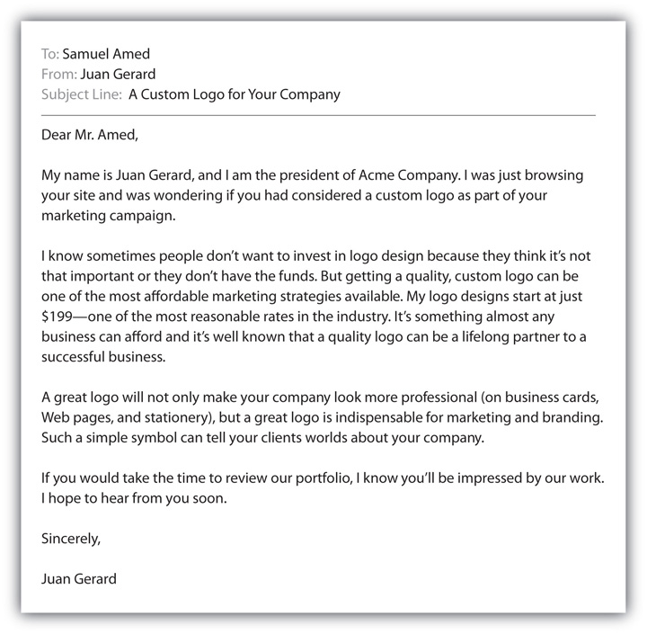

You heard Tonya Murphy talk about the importance of the preapproach in the video ride-along in Chapter 8 "The Preapproach: The Power of Preparation". Now she wants to provide you with insights about the moment of truth…the first time you actually come in contact with the customer. The approach is that critical step when the customer decides if she is going to be open to hearing your presentation.
Ride along with Tonya and hear her tips about what it takes to make a successful approach. Based on Tonya’s experience, you only have fifteen seconds to win over the customer. You need a strong approach.
(click to see video)When Paul McCartney returned to New York in July 2009 to play a concert at Citi Field, the new stadium built in the place of Shea Stadium where The Beatles first invaded the American music scene in 1965, the atmosphere was electrifying. He started the concert by saying, “Welcome to the new Citi Field Stadium. It’s been a long time since I’ve been here.… I have a feeling we’re going to have a little bit of fun tonight.”“Paul McCartney’s first concert at City Field,” video, July 22, 2009, http://www.youtube.com/watch?v=cdHC6OJPShQ (accessed July 26, 2009). Then he played The Beatles’ classic “Drive My Car,” and the crowd went wild.“Paul McCartney at Citi Field Opening Song ‘Drive My Car,’” video, July 17, 2009, http://www.macca-central.com/news/?id=3070 (accessed July 26, 2009).
Paul McCartney didn’t need to talk to the audience. In fact, people didn’t come to hear him speak at all; they came to hear him sing. But Paul McCartney clearly understands the power of a strong approach. His brief welcome, tip to the past, and promise for a great show were all part of his short but effective sales approachThe third step in the selling process; the point at which you make contact with the customer.. While you might not think of Paul McCartney as a salesperson, his concerts, just like those of other rock stars and recording artists, are actually sales presentations for his new songs and albums.
In all types of selling, the approach precedes the sales presentation. In the case of the concert, you probably already know Paul McCartney and what to expect from him. But when you are meeting someone for the first time in sales, your approach won’t be successful unless you how you make a good first impression.
“You only get one chance to make a first impression.” This is a saying you’ve probably heard many times before. First impressions are quickly formed, difficult to change, and can have a lasting effect.BNET Health Care Industry, “Social Perception,” BNET, March 2001, http://findarticles.com/p/articles/mi_g2699/is_0003/ai_2699000324/?tag=content;col1 (accessed May 16, 2010). Think of a first date, your first day of high school or college, or any job interview you have gone into. You were probably nervous because you knew the importance of making a good first impression. Similarly, the sales approach is the most intimidating point of the sales process for many salespeople because they know that the decision to buy or not to buy can often start with this initial contact. The approach is your first phone call to your prospect, the moment on the sales floor where you walk over to a new customer and say, “That’s our newest model, and it has one terabyte of capacity. Do you record a lot of videos or music?” or your first visit to a target business when you ask to set up a meeting with your prospect. You’ve done your research, your planning, and your preparation, but the approach is where the rubber meets the road.
While prospecting and the preapproach are entirely under your control, the approach is the first part of the sales process where you actually come in contact with your prospect and you’re not quite sure what she will say; this can be a little nerve wracking. However, if you’ve researched your prospect, and if you go into the sales call prepared, you can have confidence that you will be able to adapt your sales approach to your individual customer. Keep in mind that you aren’t selling a product during your approach; you are actually introducing yourself and opening up the way for the opportunity to make your sales presentation later. Consider these six Cs, or things to keep in mind before and during your sales approach. These six points will help you anticipate your customers’ responses, adapt, and execute your approach with success.
If you know your product inside and out, and you’ve set your objectives and prepared a general benefit statement, you will be well equipped going into your call, so have confidence. (On the other hand, confidence without preparation is a sure recipe for disappointment, so make sure you actually have done your homework first.) Not only will a confident attitude set the tone for the meeting and help you build credibility with your customer, but it will also help you perform your job better. As psychologist William James said, “Attitude at the beginning of a difficult task…more than anything else, will affect its successful outcome.”Brian Johnson’s Philosophers Notes, “Inspirational Quotes: William James,” http://philosophersnotes.com/quotes/by_teacher/William%20James (accessed May 16, 2010).
Of course, feeling and appearing confident in a stressful situation is more easily said than done, but there are some simple psychological tricks that can help. For in-person sales approaches, sales coach Jim Meisenheimer suggests giving yourself an affirmation before heading into the meeting. For instance, tell yourself “This will be one of the most positive sales calls I have ever had with a new prospect.”Jim Meisenheimer, “7 Things to Do to Prepare for Your First Sales Call,” EzineArticles, http://ezinearticles.com/?7-Things-to-Do-to-Prepare-For-Your-First-Sales-Call&id=2409769 (accessed May 16, 2010). If you believe you will succeed, it is more likely that you will succeed. In addition, dressing well for your sales call (discussed in greater detail later in this chapter), will help you feel more confident and professional.
For sales calls that happen over the phone, prepare for your call by organizing your workspace first. Clear off your desk and make sure you have everything you will need within easy reach—calendar, note pad and pen, fact sheets, precall planning worksheet, and anything else that might be helpful during the call.Craig Harrison, “Warming Up to Cold Calls,” Expressions of Excellence, Fall 2001, http://www.expressionsofexcellence.com/ARTICLES/warmcoldcalls.htm (accessed July 30, 2009). You should also try standing up (because people feel more powerful when they are standing) and smiling while you talk (it will relax you and will help you to use a positive, energized tone of voice).Business Link, “Planning to Sell,” http://www.businesslink.gov.uk/bdotg/action/detail?type=RESOURCES&itemId=1081503204 (accessed July 30, 2009).
Building credibility is one of the most important challenges you will face early on in the sales call; you want to convince your customer that you are competent, that you offer valuable solutions, and that you are trustworthy.Thomas A. Freese, Secrets of Question Based Selling (Naperville, IL: Sourcebooks, Inc., 2003), 113. As sales strategist Thomas A. Freese writes, “Without credibility, sellers won’t even get a chance to take a swing at the ball.”Thomas A. Freese, Secrets of Question Based Selling (Naperville, IL: Sourcebooks, Inc., 2003), 116. Open the conversation by introducing yourself and your company; if you are meeting your customer in person, make eye contact and offer a firm handshake. Next, briefly explain the purpose of your call (without making your sales presentation). Your customers are busy people, and will appreciate it if you are direct. In addition, an up-front manner like this conveys trustworthiness.
Depending on the type of sales situation you are in, you may be approaching your prospect, or they may be approaching you. In B2B sales, you are generally approaching your prospect, so you have researched them first. While qualifications like a proven track record, satisfied customers, or number of years in sales might help establish your credibility, according to Jeff Thull, CEO of Prime Resource Group, these qualifications are expected, and listing them isn’t an effective way to lead off your sales call. Thull says exceptional credibility comes when you can demonstrate that you have done your homework. In other words, it’s not what you know about your company and your product that will impress your customer; it’s what you know about your customer and his situation.Jeff Thull, “How to Establish Sales Credibility: It’s Not the Stories You Tell, It’s the Questions You Ask,” MarketingProfs, February 6, 2007, http://www.marketingprofs.com/7/thull15.asp; Neil Rackham, The Spin Selling Fieldbook (New York: McGraw-Hill, 1996), 40. Later in this chapter, you will learn about specific ways to do that.
By now you might be wondering how you should approach your prospect. Do you want to make your first contact in person, on the phone, or over e-mail? The way you make contact will depend on the specific selling situation. Consider whether you are in a situation in which you will initiate the approach, whether your customers will initiate the approach, or whether your selling will include a mixture of both. For instance, maybe you work for a company that specializes in corporate training and personal development services, and your customers include referrals (in which case the prospect is approaching you) as well as prospects you have identified through research (in which case you are contacting them). Even retail selling can include a mixture of both. If you are selling cars or fine jewelry for instance, your customer might come into the showroom or store and ask you for help directly, or he might just start looking around, in which case you would approach him. Of course, because of the environment, in most retail situations the approach happens in person.
While there’s not one set way to make an approach, the constant is to make every approach personal. Every situation is different—some approaches may be made at a trade show, while others may be made in an office, or even on the phone—but it’s always a good idea to show appreciation. “In every conversation, include at least one appreciative remark,” according to Rosalie Maggio, best-selling author of How to Say It and The Art of Talking to Anyone. Praise the other person’s business acumen, charity work, or even her taste in shoes. As long as the appreciation is brief, sincere, and specific, the feeling will be remembered long after the words are forgotten.”Robert Jones, “How to Make a Powerful First Impression,” Entrepreneur, November 17, 2008, http://www.entrepreneur.com/startingabusiness/selfassessment/article198622.html (accessed July 30, 2009).
On the other hand, in situations where you are generally approaching the customer first, it’s important to think strategically about the way you want to contact your prospects. E-mail is one of the most efficient and least expensive ways to get in touch with a large number of prospects, but e-mail—like direct mail—is impersonal and has a low response rate: 2 or 3 percent at best.Joanna L. Krotz, “5 Steps to Hitting Your Direct Mail Targets,” Microsoft Small Business Center, http://www.google.com/search?client=safari&rls=en&q=5+steps+to+hitting+your+direct+mail+targets&ie=UTF-8&oe=UTF-8 (accessed July 30, 2009). (Just think of all the “junk” e-mails you delete or send through your spam filters on daily basis). E-mail can work as an extension of the qualifying process because only the prospects with genuine interest will be motivated enough to respond. This makes e-mail a useful approach for smaller, less complicated sales that require the seller to deal with a large number of prospectsSean Mize, “What’s the Most Effective First Contact with a Prospect—Email or Phone?” EzineArticles, http://ezinearticles.com/?Whats-The-Most-Effective- First-Contact-With-A-Prospect---Email-Or-Phone?&id=1206246 (accessed July 30, 2009). (e.g., insurance or real estate). On the other hand, e-mail is not the most effective way to reach your best prospects, especially not in complicated B2B sales—after all, in relationship selling you want your approach to be as personal as possible.
Face-to-face interaction is definitely the most personal approach you can make, but it is also the most difficult. In large B2B sales, since your contacts are decision makers with high levels of responsibility, they are busy people. You wouldn’t just show up at their businesses without an appointment. In these cases, it’s best to call first and ask your contact if you can schedule a time to meet with her in person. Of course, you might get sent right to voice mail, especially when you are trying to contact a busy manager. If you’ve tried a number of times and can’t get through, you can leave a message, but make sure you follow up by calling back later in the day or the next day. Be persistent and call back until you can speak to someone. Also keep in mind that there are always exceptions to the rule. You might have the opportunity to make a face-to-face first contact (and secure an appointment for a sales presentation) if you know your B2B prospect will be present at a trade show or industry event you plan to attend.
Whether you approach your prospect in person or over the phone, you want to build good rapport. After all, wouldn’t you rather do business with someone you like? Your customer will too. “Most decision makers base their purchasing decisions on who they are buying from, not what they are buying,” says Ray Silverstein, sales columnist for Entrepreneur online.Ray Silverstein, “How Do I Build Customer Rapport?” Entrepreneur, July 25, 2007, http://www.entrepreneur.com/management/leadership/leadershipcolumnistraysilverstein/article182144.html (accessed August 1, 2009). Rapport building happens at every step of the sales process, but it begins with your first interaction.
For in-person sales approaches, keep in mind the powerful elements of nonverbal communication that were covered in Chapter 5 "The Power of Effective Communication", such as when people communicate face-to-face, only about 20 to 30 percent of that communication is verbal.Katherine Toland Frith and Barbara Mueller, Advertising and Societies (New York: Peter Lang Publishing, 2003), 34. This means that it is important to focus not only on what you are communicating but also on how you communicate it. You can make an instant positive connection simply by remembering to smile. This is critical: people are naturally wired to smile in response to others’ smiles, so by smiling you will put your prospect at ease and help create a positive atmosphere.Geoffrey James, “Principles of Building Rapport,” video, March 9, 2009, BNET, http://blogs.bnet.com/salesmachine/?p=1461&tag=content;col1 (accessed August 1, 2009). In addition, consider that people are more likely to trust and respond favorably to people who are similar to them.Geoffrey James, “How to Build Rapport on the Phone,” BNET, September 18, 2007, http://blogs.bnet.com/salesmachine/?p=128&tag=content;col1 (accessed August 1, 2009). Responding to your prospect’s body language and posture with a similar body language and posture, or mirroring, helps to establish rapport. Learn about the power of nonverbal communication and mirroring during a sales approach in this short video.
Interview with Larry Pinci, Author of Sell the Feeling
Learn how to create rapid trust.
And don’t forget to bring some business cards with you. You’ll want to exchange business cards with the person with whom you are meeting.
On the other hand, when you communicate over the phone, you won’t be able to use body language to help put your prospect at ease or establish rapport; your voice (including your pitch, tone, enunciation, and word choice) is the only tool you have.Geoffrey James, “How to Build Rapport on the Phone,” BNET, September 18, 2007, http://blogs.bnet.com/salesmachine/?p=128&tag=content;col1 (accessed August 1, 2009). Sales coach Wendy Weiss suggests recording your voice as you practice your sales approach and listening to how you sound. Is your tone convincing and confident? Does your voice have warmth and passion in it? Are you speaking clearly enough to be understood? Listening to your recorded voice will help you hear how you sound to other people.Wendy Weiss, “Your Voice Is Your Instrument,” Sales Information, 2004, http://www.sales.net63.net/1134.php (accessed July 30, 2009). Speech and language professor Daniel R. Boone adds that “the two most common difficulties in telephone conversations are speaking too loudly or speaking too softly,” so it’s important to pay attention to your volume as well as your tone.Daniel R. Boone, “Is Your Voice Selling You on the Phone?” American Salesman, August 1, 1993, AllBusiness, http://www.AllBusiness.com/marketing/direct-marketing-telemarketing/393038-1.html (accessed July 30, 2009). Finally, while you can’t mirror your customer’s body language over the phone, you can subtly reflect his style of speech. If your prospect speaks quickly, try speeding up your speech as well. If the prospect has a drawl, consciously slow your voice down to match his pacing. Pay attention to the way he speaks and also to his word choice and conversational style and adapt your style to match.Geoffrey James, “To Sell More, Listen to Your Voice,” BNET, September 19, 2007, http://blogs.bnet.com/salesmachine/?p=129 (accessed August 1, 2009).
You might be thinking, so now I know how to communicate with my prospect, but I still don’t know what to communicate. The “what” of your sales approach will depend on the specific selling situation and your precall objectives. In some cases, like retail for instance, your approach might be immediately followed by a sales presentation, but in other cases, particularly larger B2B sales, the purpose of the first contact is to set up an appointment for a sales presentation. In the next section of this chapter you will read more about the dos and don’ts of opening lines, or approaches, in different selling environments.
Learn about sales approaches and other best practices in selling by subscribing to the Selling Power newsletters. There are several different versions including one that focuses on the pharmaceutical industry and one for software. All e-mail newsletters are free when you sign up at http://www.sellingpower.com/content/newsletter/index.php.
Tailoring your sales approach to the individual customer is one of the keys to relationship selling. Even in retail situations in which the prospect is approaching you first (so you aren’t able to research her beforehand), you would approach different customers differently. Consider the example from Chapter 7 "Prospecting and Qualifying: The Power to Identify Your Customers" for instance: selling a gym membership to a prospect who walks into your fitness club. If a woman with two young children comes in, you would probably spend time showing her the child care center, and you would discuss any family centered activities your club offered. If she expressed an interest in aerobics or Pilates, you would show her the class schedule and the fitness rooms where the classes are held. Adaptive selling—especially in situations in which you haven’t been able to prepare—involves observation, listening, and asking directed questions to uncover what your prospect needs and cares about.
John Brennan, president of Interpersonal Development, suggests using intuition to customize your behaviors and the substance of your communications to your customers’ buying style. “If [something in the interaction] does not feel right,” he says, “pay attention.” Tune in to your customer’s responses. If you get the sense that he wants simplicity, don’t go into too much detail. On the other hand, if he uses detail in his own responses, use a higher level of complexity when you respond back.John Brennan, “Adapt Your Style to Win over the Customer,” EvanCarmichael.com, http://www.evancarmichael.com/Sales/395/Adapt-your-style-to-win-over-the-customer.html (accessed August 1, 2009). Ultimately, the trick is to get inside your customer’s head. Ask yourself, “What would I care about and want to know if I was this person? What would I respond well to?” Is your customer an individual consumer? Is he a technical expert? Is he someone working to earn the respect of higher-level managers in his company? Putting yourself in your customer’s shoes and adapting accordingly will help you earn his trust.John Brennan, “The Art of Adaptation,” EvanCarmichael.com, http://www.evancarmichael.com/Sales/395/The-Art-of-Adaptation.html (accessed July 30, 2009).
Great Selling Skills Never Go Out of Style
In 1946, when the American Tobacco Company’s account was up for grabs, big advertising firms across the country competed to earn its business. Ben Duffy, the president of a small advertising firm in New York City, also decided to take a shot at the account. Duffy made a phone call and successfully secured an appointment with the president of the tobacco company, but he knew he was just a small firm up against advertising giants and that he would have to do something to set himself apart during the sales call. As he thought about what to do, Duffy decided to put himself into his prospect’s shoes. “What questions would I have on my mind if I were the president of American Tobacco?” he asked himself. He made a list of fifty questions then narrowed that list down to ten. The next day when he met with his prospect, Duffy said, “I thought you would have some questions about me, my company, what’s in the deal for you, and what’s in it for me, so I made a list.” Surprisingly, the president had also made a list of ten questions, and seven of the ten questions on the two men’s lists were the same. By putting himself in his prospect’s shoes, Duffy established quick rapport and walked out of the office that day with a $15 million advertising account.See http://www.bradskiles.com/yahoo_site_admin/assets/docs/Larry_Wilson.24852250.pdf (accessed May 16, 2010).
You’ve learned how relationship selling is about partnering in Chapter 3 "The Power of Building Relationships: Putting Adaptive Selling to Work". Of course all sales have a bottom line (you ultimately want to close the sale), but your customer has something he wants out of the transaction, too. In relationship selling you want to focus on your customer so he gets what he wants; when you do this, your selling becomes a collaborative process. When you practice collaborative selling, both you and your customer get more out of the situation, and you create ideas that would not have been possible for each party working individually.
Consider a recent selling partnership between Pandora, an online streaming radio site, and Whole Foods Market. Doug Sterne, Pandora’s director of sales, approached the natural foods retailer about locally targeted advertising spots in the San Francisco Bay Area. He told Whole Foods that one of Pandora’s goals is keeping advertising to a minimum, only airing one commercial per hour of radio time, but that selling advertising is necessary to Pandora’s continued success. Meanwhile he learned from Whole Foods that one of their goals was “for listeners to see Whole Foods as a place where they could get complete meals.” By sharing their objectives this way, the two companies were able to build an advertising campaign that included fifteen-second audio spots targeting listeners within a certain distance of various Whole Foods locations as well as time-specific promotional ads: one in the morning promoting a lunch special and one promoting a fish special closer to the dinner hour. The collaboration resulted in a successful return on investment for both parties, and Whole Foods is planning to expand their advertising purchases to include the Los Angeles area soon.Andrew Hampp, “Pandora Set to Expand Thanks to New Royalty Ruling,” Advertising Age, July 13, 2009, http://adage.com/mediaworks/article?article_id=137878 (accessed May 16, 2010).
When you meet a customer face-to-face, appearance is an important part of the first impression, so make sure to put careful thought into what you wear to your sales call. A good rule of thumb is to dress a little better than you think your customer will dress.Dave Kahle, “What Are Your Views on Dress? Does it Matter?” The Kahle Way, http://www.davekahle.com/qa/dress.htm (accessed May 26, 2010). It’s hard to go wrong dressing more professionally than you need to, but you can go wrong by dressing too casually. What you wear is as much of a communication as what you say or how you use body language; so make sure to dress appropriately and professionally.
At the same time, make sure you know something about your customer and his company culture. As sales coach Dave Kahle says, “You should, within the context of the customer’s world, look successful, confident, and competent.”Dave Kahle “What Are Your Views on Dress? Does it Matter?” The Kahle Way, http://www.davekahle.com/qa/dress.htm (accessed May 16, 2010; emphasis added). If you sell agricultural supplies to farmers, or you sell products to maintenance supervisors or people who wear uniforms, for example, dressing too formally will separate you from your customer. However, these cases are the exceptions rather than the rule. When you are selling to managers within a company, dress will be more formal. Find out about the company culture to learn whether dress is business casual or “coat and tie” and dress up a notch.
What is the worst pick-up line you’ve ever heard? How did the person on the receiving end react? Chances are he or she was not very impressed. During a sales approach there are also certain opening lines to avoid—and others that will be more successful. The following section offers some pointers (and reminders) that will give you the power to start the selling relationship off on the right foot.
While sales approaches can vary widely depending on the selling situation, there are a few standards that always apply.
There’s nothing more off-putting in a sales approach than a salesperson misspelling or mispronouncing your name. If the salesperson can’t be bothered to learn something as basic as your name, it sends the message that he doesn’t care about you as a person, and it certainly gets the relationship off to a bad start. In e-mails, double check that the customer’s name isn’t misspelled or mistyped. For telephone or in-person approaches make sure you’ve figured out how to pronounce the prospect’s name during your preapproach research. Ask contacts who might know (a receptionist, for instance, or your referral source) if you are unsure. And if the prospect has a difficult name, and you can’t get a confirmation on pronunciation, avoid using his name in your opening lines.
As sales consultants Andrew Sokol and Ike Krieger say, during a sales call, “Don’t be interesting; be interested.”Andrew Sokol and Ike Krieger, “What to Say When You Meet a Prospect,” video, ArticlesBase, http://www.businesssuccessbuilder.com (accessed August 1, 2009). In other words, don’t try to impress your customer by spending a lot of time talking about your qualifications or how wonderful your company or product is; instead, show your prospect that you are genuinely interested in getting to know him and in understanding his needs. The only way you can do this is to listen. Ask questions and then let your customer do the talking. During in-person sales calls you should engage in active listening, which was discussed in Chapter 5 "The Power of Effective Communication". Show the customer that you are really listening by adopting a listening posture: look the customer in the eye and lean forward or incline your head while she’s talking. In any sales approach you should restate the essential points your customer brings up, both to check for accuracy of understanding and to show that you are paying attention.Edward Delgaizo and Seleste Lunsford, Secrets of Top Performing Salespeople (New York: McGraw-Hill, 2003), 54.
Listening Power
(click to see video)Listening is called “white magic,” and it can help you be a successful salesperson. The best way to listen is to ask good questions and then listen to the answers. The person who is asking the questions has the control. Find out why by watching this video.
Listening is one of those skills that is easier said than done. While people naturally want to talk, they feel most appreciated when someone else is listening. That’s when people open up and share their goals, wants, and needs. Salespeople are often known for their ability to talk, but it is listening that makes the best salespeople.
The 70/30 Rule of Listening
Hear how author and sales trainer Shane Gibson learned about listening…the hard way.
http://www.salesvideopodcast.com/mp4/listening.mp4
Source: SalesVideoPodcast.com
You might think about listening as something you do in person or on the telephone, but listening is also a strategy online. Author and sales trainer Shane Gibson has coined the term “Listening 2.0Taking the time to “listen” to the online conversation before you begin broadcasting your message.” to describe the need to “listen” to the online conversation before you begin broadcasting your message.
Listening 2.0 Podcast
If you think social media are all about getting your message out, it’s not that simple. This podcast provides effective ways to listen before you speak online.
http://www.closingbigger.net/2009/10/social-media-listening-strategy
Source: ClosingBigger.net
Have you ever heard the term “elevator pitchA concise description of a product, service, person, or project that should take no longer than an average elevator ride and is designed to get conversation started.”? It’s a concise description of a product or service that should take no longer than an average elevator ride.Aileen Pincus, “The Perfect (Elevator) Pitch,” BusinessWeek, June 18, 2007, http://www.businessweek.com/careers/content/jun2007/ca20070618_134959.htm (accessed July 26, 2009). Every salesperson has an elevator pitch for the product or service he is selling. That way, he can tell people about his product in under sixty seconds, and it’s a perfect way to start a conversation or phone call and helps to make a good first impression. In fact, everyone from a CEO to an entrepreneur has an elevator pitch about her company to tell potential investors, shareholders, and other stakeholders. Most listeners don’t have the time to hear all the details about a product or service in the first minutes of a conversation so the elevator pitch provides just enough information so the audience knows what he is talking about and wants to know more. In other words, “An elevator pitch is an overview of an idea, product, service, project, person, or other solution and is designed to just get a conversation started.”Chris O’Leary, “Elevator Pitch 101,” January 27, 2009, Elevator Pitch Essentials, http://www.elevatorpitchessentials.com/essays/ElevatorPitch.html (accessed July 26, 2009).
Elevator Pitch
Watch a business owner give her elevator pitch for her idea about green weddings on a business television show.
http://www.blinkx.com/video/elevator-pitch-green-weddings/XEE1QusdKnmWQRvx73KUnQ
Your elevator pitch comes in handy when you are making an approach on the phone or in person. It’s the perfect opportunity to tell someone about your company and product or service in less than sixty seconds so that you can engage her in conversation. Remember, an elevator pitch isn’t a sales presentation; it’s simply a way to begin an interactive conversation and get to your ultimate goal—a meeting with the decision maker.
Establishing rapport can be a challenging task when you make your approach by phone because you can’t read your customer’s body language or other visual cues, and she can’t read yours. There is also the possibility that you will catch your prospect during a busy or inconvenient time. For telephone approaches, it’s best to be brief and direct and to save small talk for your in-person meeting or for a later, scheduled phone call.
Your prospect will probably decide whether or not he is interested in what you have to say within the first twenty seconds of the call, so it’s best to be direct and get this essential information across early on. You might say something like “This is Shamika Lorenz from Selling Solutions, a firm that specializes in helping businesses reduce their selling costs, and I’m calling to let you know about an upcoming seminar for small business owners in your area.” Such directness also conveys honesty and lets your prospect know that you won’t waste his time.Sharon Drew Morgan, “This is a Sales Call: How to Begin Prospecting Calls with Integrity,” EzineArticles, http://ezinearticles.com/?This-is-a-Sales-Call:-How-to-Begin-Prospecting-Calls-with-Integrity&id=34073 (accessed August 2, 2009).
Because you want to get your prospect’s attention in the first twenty seconds, it’s important not to stumble over your words or sound like you are rambling. After you have given your name and the purpose of your call, offer a reference point based on your preapproach research. For example, “I read that your start-up has recently opened a new downtown location.” This will personalize your approach and help establish your credibility. Next, lead into a general benefit statementSharon Drew Morgan, “This is a Sales Call: How to Begin Prospecting Calls with Integrity,” EzineArticles, http://ezinearticles.com/?This-is-a-Sales-Call:-How-to-Begin-Prospecting-Calls-with-Integrity&id=34073 (accessed August 2, 2009). that will address your prospect’s “what’s in it for me?” question.
Keep in mind that asking for permission helps build trust and allows the customer to feel like she is in control of the call.Sharon Drew Morgan, “This is a Sales Call: How to Begin Prospecting Calls with Integrity,” EzineArticles, http://ezinearticles.com/?This-is-a-Sales-Call:-How-to-Begin-Prospecting-Calls-with-Integrity&id=34073 (accessed August 2, 2009). However, it’s important to think about the way you phrase your question. It is always easier for people to say yes to a question than to say no, so when you open with something like “Did I catch you at a bad time?” all your customer has to do is agree with you (“Yes, this is a bad time.”), and the call is effectively over. On the other hand, if you ask whether this is a good time, a yes response will work in your favor.Pieter Petoors, “How to Contact Your Prospect by Phone,” Pieter’s Blog, March 10, 2009, http://pietpetoors.com/blog/how-to-contact-your-prospect-by-phone (accessed August 2, 2009). Your customer is only likely to say no if this really is a bad time, and if that happens, you are well positioned to say “I understand. Would Monday at 10:30 be a better time to talk?”Michael McGaulley, “Phone Sales Skills: Your First Contact with the Prospect,” Sales Training Source, 2009, http://ezinearticles.com/?Phone-Sales-Skills---Your-First-Contact-With-the-Prospect&id=4068383 (accessed August 2, 2009).
This common greeting is one you probably use without thinking twice about it. But opening a sales call this way over the phone (when you are contacting a busy stranger who doesn’t know why you have called) can be off-putting and will probably come across as insincere.Joan Guiducci, “The First 7 Seconds of a Cold Call,” AllBusiness, August 1, 1998, http://www.AllBusiness.com/sales/selling-techniques/690353-1.html (accessed May 16, 2010).
If you are trying to get to the right person in a company and you are getting the voice mail runaround, use these simple steps:
As sales coach Sharon Drew Morgan says, “Your prospect is obviously not sitting by the phone waiting for a call from you.”Sharon Drew Morgan, “This is a Sales Call: How to Begin Prospecting Calls with Integrity,” EzineArticles, http://ezinearticles.com/?This-is-a-Sales-Call:-How-to-Begin-Prospecting-Calls-with-Integrity&id=34073 (accessed August 2, 2009). You want to be personable when you call, but you also want to keep in mind that for busy decision makers, phone calls are interruptions, so the more business oriented the interruption, the better.Michael McGaulley, “Phone Sales Skills: Your First Contact with the Prospect,” Sales Training Source, 2009, http://www.how-to-sell-your-better-mousetrap.com/phone_sales_skills.html (accessed August 2, 2009).
The Perfect Telephone Approach
(click to see video)Watch this example of how to make an effective sales approach on the phone.
Source: YouTube
Sometimes it is difficult to reach the person by phone. Although it’s a good idea to call back at different times of the day to see if you can catch the person, it is also a good idea to leave a short voice mail to introduce yourself, your company, a brief reason for your call, and when you will call back.
Effective Voice Mail Messages
(click to see video)Learn some tips for doing an effective approach via voice mail.
Source: YouTube
While an e-mail approach is less personal than an in-person or telephone approach, it might be your best method, depending on the type of sale in which you are engaging. For instance, Internet marketing coach Sean Mize says of his business, “I generate 2,000 subscribers via the Internet every single month, so to try to contact all those individuals by phone, unless I have a huge telemarketing room, would be absolutely impossible.”Sean Mize, “What’s the Most Effective First Contact with a Prospect—Email or Phone?” EzineArticles, http://ezinearticles.com/?Whats-The-Most-Effective- First-Contact-With-A-Prospect---Email-Or-Phone?&id=1206246 (accessed July 30, 2009). Here are a few things to keep in mind.
Online marketing expert Daegan Smith suggests crafting about fifteen different e-mail templates so you can choose between them when you want to get in touch with a prospect.Daegan Smith, “How to Contact Business Prospects, ArticlesBase, April 28, 2008, http://www.articlesbase.com/communication-articles/how-to-contact-business-prospects-398144.html (accessed August 2, 2009). You can think of it a little like building up your wardrobe so that you have different things you can wear on different occasions: you wouldn’t wear the same clothes to a baseball game that you would wear to a business meeting. You also wouldn’t send the exact same communication to all your prospects. The bottom line is that you want the e-mail to be as personal as possible.
Keep in mind that an e-mailed sales approach is still a first impression, even though the communication doesn’t involve any immediate contact. While the e-mail should be personal, it should be more formal than the personal e-mails you send to friends. You want to sound knowledgeable and credible, which means paying close attention to your word choice and style. Give the e-mail the same attention you would give to a business letter. This also means reading the e-mail several times before sending it to check for spelling and grammar mistakes, just as you would with any other business correspondence.Daegan Smith, “How to Contact Business Prospects,” ArticlesBase, April 28, 2008, http://www.articlesbase.com/communication-articles/how-to-contact-business-prospects-398144.html (accessed August 2, 2009).
Here is a sample e-mail used to approach prospects to hire the Acme Company to create a logo. This e-mail was reproduced with permission from The Writers For Hire Web site.The Writers For Hire, Inc., “Sample Sales Emails: Personal Sales Email,” http://www.thewritersforhire.com/personal-sales-email.htm (accessed July 27, 2009).
Figure 9.5
Don’t get discouraged if you don’t get a response to the first or second e-mail you send. In B2B sales, it often takes about twelve e-mails before contacts reply, so be persistent.Daegan Smith, “How to Contact Business Prospects,” ArticlesBase, April 28, 2008, http://www.articlesbase.com/communication-articles/how-to-contact-business-prospects-398144.html (accessed August 2, 2009). If your prospect doesn’t respond right away, it doesn’t mean that he isn’t interested in what you have to offer—just assume that he is a busy person with plenty of other distractions that come across his desk every day. If you continue to send your e-mails regularly, eventually the message will register on your prospect’s “radar screen.” Of course, you don’t want your e-mails to be an annoyance either, so consider including an “unsubscribe” option somewhere in the body of the message for the prospects who truly aren’t interested so that they can request to be removed from your e-mail list.Sean Mize, “What’s the Most Effective First Contact with a Prospect—Email or Phone?” EzineArticles, http://ezinearticles.com/?Whats-The-Most-Effective-First-Contact-With-A-Prospect---Email-Or-Phone?&id=1206246 (accessed July 30, 2009).
Again, the goal is to make your e-mails as personal as you can. If you have a number of e-mails drafted, select the one that seems most appropriate to the specific prospect(s) you want to target, and include your prospect’s name in the heading and body of the e-mail.Daegan Smith, “How to Contact Business Prospects,” ArticlesBase, April 28, 2008, http://www.articlesbase.com/communication-articles/how-to-contact-business-prospects-398144.html (accessed August 2, 2009). This will set your message apart from the average, impersonal “junk” e-mail that people get regularly.
In some cases you will be able to leverage your online social network to approach a prospect. For instance, if you are a Web site designer and you attend a Webinar on increasing Internet traffic to business’s homepages, the other Webinar participants are potential prospects, and you might decide to contact them and ask to be added to their LinkedIn networks. If you are not familiar with using LinkedIn, you might find it helpful to review the videos in Chapter 3 "The Power of Building Relationships: Putting Adaptive Selling to Work".
How to Make Your Approach on a Social Network
(click to see video)Learn how social networking can help you make an effective sales approach.
Companies are also increasingly using social networks as a budget-friendly way to allow prospects to approach them.Leslie Hamp, “5 Steps to Effective Business Social Networking,” Social Networking News, July 9, 2009, http://socialnetworkingnewstoday.com/ (accessed August 2, 2009).
Social Networking Transformation
For PJA Advertising & Marketing, entry into the social networking world has transformed the way the company interacts with customers on every level. Phil Johnson, one of PJA’s senior managers, says, “Now our social media activities involve almost everyone who works here and touch almost every aspect of agency life.” Early on, the company’s vice president of business development used LinkedIn to connect with PJA’s prospects and current customers, and today PJA uses LinkedIn in combination with Twitter, Facebook, and links through YouTube and Flickr to approach new customers and direct potential prospects to the company’s Web site. The upshot? According to Johnson, it’s working. The benefit of using social networks to reach prospects is that you can have greater transparency, he says. PJA might contact a prospect via LinkedIn and direct him to a YouTube video, which might then include a link to the company’s Web page or Twitter account, so in the end the prospect gets a view of the agency from a number of sources. “Today, when we walk into a capability meeting, the people we’re talking to already have had a lot of exposure to our thinking and our personality,” says Johnson.Phil Johnson, “Tweeting Your Way to New Prospects,” Advertising Age, July 6, 2009, http://adage.com/smallagency/post?article_id=137730 (accessed May 16, 2010).
According to marketing specialist Leslie Hamp, even something as simple as “I noticed we were on the Webinar together, and I’d like to add you as my friend,” will work.Leslie Hamp, “5 Steps to Effective Business Social Networking,” Social Networking News, July 9, 2009, http://socialnetworkingnewstoday.com/ (accessed August 2, 2009). The point is that you want to give your approach a personal touch. If you just go out and friend all your prospects without making the effort to engage with them, they might not accept your friend request in the first place, and even if they do accept, they may wonder who you are and how you found them. Or worse, they may soon forget about you altogether. You can think of the networking tool as a facilitator, something that gives you the opportunity to connect, but it is still up to you to do the work of socially interacting and leveraging your connections.
There are so many new and interesting social media programs available that it can be tempting to join multiple sites; but if you are a member of more than two or three social networks at one time, you will probably find your efforts spread too thin. You can get the most out of your social networking by focusing on regular contributions to the few networks of which you are a member, rather than by trying to maintain your profile and connections on a number of sites.Leslie Hamp, “5 Steps to Effective Business Social Networking,” Social Networking News, July 9, 2009, http://socialnetworkingnewstoday.com/ (accessed August 2, 2009).
In social networking situations, just as in face-to-face interactions, you want to build a good rapport by earning the trust and respect of your customers and colleagues. This means considering ways you can participate in and contribute to the online community, rather than simply using the social networking sites to promote yourself or your product. As virtual office administrator Sue Canfield says, “Social networking needs to be about building relationships—not primarily about self-promotion.”Sue Canfield, “Social Networking Can Work for Your Business,” Chief Virtual Officer, May 12, 2009, http://chiefvirtualofficer.com/blog/2009/05/12/social-networking-can-work-for-your-business/ (accessed May 16, 2010). For instance, if you decide to start participating in a news-related social networking site like Digg.com (where people post links to and comments about news stories), start rating and commenting on other users’ postings before you begin bookmarking your content there.Sudarmaji Lamiran, “How to Quickly and Easily Leverage Social Media to Build a Big List,” Social Networking News, July 13, 2009, http://socialnetworkingnewstoday.com/ (accessed August 2, 2009).
As with e-mail approaches, pay attention to your language. Use a higher level of formality when you contact business prospects than you would use when you send social networking messages to your friends; avoid slang (like “u” for “you” or “btw” for “by the way”).Leslie Hamp, “5 Steps to Effective Business Social Networking,” Social Networking News, July 9, 2009, http://socialnetworkingnewstoday.com/ (accessed August 2, 2009).
Even though a social-network approach looks different from an in-person or over-the-phone approach, the purpose is the same—establishing rapport, building trust, and helping your customer discover needs and opportunities—so avoid making your sales pitch during your initial contact. For instance, returning to the example of the Web site design specialist, assume you added ten of your fellow Webinar participants to your social network. Maybe your company has made a short YouTube video that offers advice on incorporating blogging capabilities into business Web sites, so you send a message and link to your ten new contacts: “I thought you might be interested in this video.” In the video’s description on YouTube, you can post a link to your company Web site or blog where you make a direct sales pitch. This way you are offering your prospects valuable information without coming across as pushy. If a prospect is interested in pursuing your services, he has the resources to follow up on his own.Leslie Hamp, “5 Steps to Effective Business Social Networking,” Social Networking News, July 9, 2009, http://socialnetworkingnewstoday.com/ (accessed August 2, 2009).
Use the Following Tips to Make Social Networking More Effective for Your Sales Approach
Avoid the Following When Using Social Networking as a Tool to Make a Sales Approach
Some managers and buyers are extremely busy, and when you try to reach them by phone, you will only interact with a secretary, so your first contact with your actual customer might be at a trade show or industry event. When John Koss, sales vice president and partial owner of Koss Corp., wants to approach buyers from his megaretail clients, he heads to the Consumer Electronics Show (CES) in Las Vegas. Koss Corp. sells headphones and audio equipment to stores around the country, including big names like Wal-Mart, Target, and Sears. Before heading to CES, Koss schedules appointments with some buyers and hopes that others—like Wal-Mart’s buyers, who refuse to make appointments—will stop by his booth. He makes a number of sales approaches at the trade show and then spends the next few months traveling to interested buyers’ corporate headquarters, where he gives his sales presentations.Susan Greco, “Marketing: Selling the Superstores,” Inc., July, 1995, http://www.inc.com/magazine/19950701/2331.html (accessed May 16, 2010). Koss’s strategy is an example of one typical B2B sales approach situation.
In other situations, if you are selling to smaller businesses at the local level, you might make your approach in person at the customer’s place of business. Why make an in-person approach rather than placing a phone call? While visiting in person takes more time and effort, it’s more personal: it is often easier to build rapport with your customer during a face-to-face interaction. There are just a few things to keep in mind when making an in-person or telephone approach in B2B sales.
You want to get your prospect to like you in the first minute of your sales approach, and you want to give him a reason to keep listening to what you have to say. Be up front: introduce yourself and explain the purpose of your call (including the general benefit statement you have prepared) early on. Then, as in any sales call, ask permission to continue.Tom Reilly, Value-Added Selling: How to Sell More Profitably, Confidently, and Professionally by Competing on Value, Not Price, 2nd ed. (New York: McGraw-Hill, 2002), 138. Your opening might sound something like this:
| You: | Hello, Aaron. My name is Janeka Jones from iFX, a provider of e-commerce solutions. |
| Aaron: | Hello. |
| You: | We met at the South by Southwest conference in Austin last week. You mentioned that an area of growth for your business is personalized apparel. The personalized jerseys you offer on your Web site are really unique. In fact, I ordered one this weekend, which gave me an idea about how we can help you reduce your order processing time. Is this a good time to talk about your business? |
| Aaron: | I’m running off to a meeting in a few minutes, but I always like talking about my business. |
| Aaron: | I’m always looking for ways to get the product to my customers faster, but I really can’t afford any additional order processing costs. |
| You: | I can understand that. My idea can actually help you reduce your overall operating costs and improve your processing time. Since you are on your way to a meeting, would it work for you if I stop by on Tuesday morning so we can talk more? |
| Aaron: | Let’s see. Tuesday morning at 10:30 looks like it works for me. |
Of course you want to be personable and establish a good relationship with your customer, but buyers often say that it irritates them when salespeople try to engage in too much small talk, especially when it comes across as forced or artificial. When deciding how to balance small talk with business, it’s important to take your lead from your customer. In the example where Janeka Jones from iFx approaches a prospect, for instance, it wouldn’t be a good idea to make a lot of small talk during your approach because the customer let her know that he was short on time.
Some customers are more people oriented, so getting to know you as a person will be an important part of the sales process for them. Other customers are very task oriented and will prefer to get down to business right away. They may opt for a more formal, businesslike approach and will only be interested in socializing after a transaction or meeting is completed.Tom Reilly, Value-Added Selling: How to Sell More Profitably, Confidently, and Professionally by Competing on Value, Not Price, 2nd ed. (New York: McGraw-Hill, 2002), 140. Start your call with a direct approach, and then pause and give your customer a chance to respond. You can read his reaction to gauge the most appropriate communication style to use. Does he seem anxious to get down to business, or is he open to conversing for a bit first? The bottom line is that you don’t want him to feel like you are wasting his time.Edward Delgaizo and Seleste Lunsford, Secrets of Top Performing Salespeople (New York: McGraw-Hill, 2003), 51. Susan Greco, writer for Inc. magazine, tells the story of a meeting at the Consumer Electronics Show between a salesperson and a buyer for Lowe’s home store. The buyer started the meeting off by saying that she didn’t have much time and just wanted a quick overview of the company, but the seller, who was naturally chatty and personable, missed these cues. He talked at some length and gave the buyer a thorough tour of all the displays at his product booth. Meanwhile, the buyer looked at her watch (another cue the seller missed) before the seller concluded by saying “We really want your business.” The response from the buyer was sarcastic and a little cold: “You do?”Susan Greco, “Marketing: Selling the Superstores,” Inc., July, 1995, http://www.inc.com/magazine/19950701/2331.html (accessed May 16, 2010). Instances like this are why it is critical to listen to your customer: both his verbal and nonverbal communications. Your attempts to establish rapport can backfire if you don’t pay attention to his signals.
Avoid insincere openers or openers that convey a lack of confidence in yourself or your product. Here are a few examples of opening lines to avoid:
“Would you be interested in saving money?”
An opening line like this immediately puts people on guard. (Oh no, another phony salesperson trying to get my attention with an obvious ploy.)
“You’re probably a busy person, so I promise I’m not about to waste your time.”
Of course, buyers don’t want you to waste their time, but if you mention time wasting up front, you are suggesting that you are someone who could waste your customer’s time. This opening conveys a lack of confidence, and it sets a negative tone for the sales call.
“I just happened to be in the area visiting another customer, so I thought I’d drop by.”
This tells your customer that he isn’t a priority—just someone you were able to fit in between other, more important sales visits.
“I heard that you’ve been having trouble in your customer service department [or in some other area] lately.”
This opening will also put your customer on guard. (Who’s been talking about our problems? How did she find out?)Tom Reilly, Value-Added Selling: How to Sell More Profitably, Confidently, and Professionally by Competing on Value, Not Price, 2nd ed. (New York: McGraw-Hill, 2002), 138.
Use the Following Tips to Make Your In-Person Sales Approach More Effective
Avoid the Following When Approaching a Prospect in Person
In B2C sales situations, there is sometimes a greater temptation to focus immediately on selling and to forget about rapport building. In most B2C situations the salesperson hasn’t invested time in researching the prospect, and he might figure that this is a one-time sale. However, relationship selling is as valuable in the retail environment as it is in the B2B sales environment. Salespeople who treat their customers as people before they treat them as sales prospects are the ones who get good customer referrals and repeat buyers. If you have a restaurant or a coffee shop where you’re a regular customer, you might already know how this principle works. Aren’t you more inclined to order coffee at a place where people greet you, know your name, and get your drink order right—even if another coffee shop opens up closer to your home or your office? Here are a few dos and don’ts when it comes to earning your customer’s trust and building rapport.
Everyone wants to be recognized. Have you ever walked into a retail store, looked around, and left, without an employee ever talking to you? How does an experience like that affect your buying decision? You might agree with sales consultant Donna Seigel who says “Frankly, when [the salespeople ignore me], I’m not inclined to ever go into that store again.”Donna Siegel, “Relationship Selling: Getting Your Customers Coming Back for More,” SalesMBA, http://www.salesmba.com/articles1/ssrl03.htm (accessed July 30, 2009). Engaging your customer might mean the difference between making or losing a sale. Even if you don’t know the person, you can make small talk: compliment the customer (sincerely of course) or discuss the weather, local news or events, or sports.Donna Siegel, “Relationship Selling: Getting Your Customers Coming Back for More,” SalesMBA, http://www.salesmba.com/articles1/ssrl03.htm (accessed July 30, 2009).
Make your customer feel welcomed and comfortable when she comes into your business. Earl Taylor, longtime employee at Dale Carnegie & Associates, says, “The specific words you say are different, of course, but the motivation and attitude should be that you are truly grateful for the opportunity to interact with this individual and have the opportunity to be of service.”Geoffrey James, interview by Earl Taylor, “Building Rapport in Retail,” BNET, May 12, 2007, http://blogs.bnet.com/salesmachine/?p=20 (accessed May 16, 2010). Making the customer feel at home means not only interacting with him but also going out of your way to help him. Maybe the customer comes into your computer store looking for printer ink. Rather than leaving him to fend for himself, walk him to the aisle where you keep your printers (don’t just point him in the right direction). Once you take him to the aisle, ask if you can help him find the right ink type for his printer.
“No, thanks. I’m just looking” is the customer’s automatic response to this question, so the question itself actually comes across as a polite way of giving your customer the brush off:Geoffrey James, interview by Earl Taylor, “Building Rapport in Retail,” BNET, May 12, 2007, http://blogs.bnet.com/salesmachine/?p=20 (accessed May 16, 2010). “I won’t bother you, and I don’t expect you to bother me.” Instead, ask a question that will get your customer talking. An open-ended question like “What brings you into International Jewelers today?” will be a more effective way of engaging someone.
When a customer enters a high-end car dealership, all the elements of the approach should be used to engage the customer, as in the example below:
| You: | It is a great car, and it gets over thirty miles per gallon in the city. |
| Customer: | It is really nice, but I’m not sure a hybrid is what I need. I just came in to learn a little more about it. |
| You: | That’s a good idea. I’ll be happy to give you a lesson in hybrids to determine if one is right for you. You should also consider a test drive so you can see exactly how it handles on the road. |
What is the number one fear customers have about talking to salespeople? You might have guessed it: pressure. In fact, some customers will go out of their way to avoid salespeople for this reason. Let your customers know that they don’t have to worry about pressure when they buy from you. As in all selling situations, take your cue from the customer by listening and asking questions to uncover her needs first. Don’t start the conversation off with a question like “What’ll it take to get you into a Lexus today?” That’s essentially putting your sales presentation before your approach. Finally, keep in mind that asking your customer’s permission will also help take the pressure off: “We have a number of new sports utility vehicles. Can I ask you some questions about the specific characteristics you’re looking for?”
You’ve probably seen the scene in Pretty Woman where Julia Robert’s character walks into a high-end clothing boutique on Rodeo Drive and the saleswomen turn up their noses at her because she doesn’t fit the right customer image. You probably felt a little triumphant, especially if you’ve ever been slighted by a salesperson, when her character returns the following day to spend a few thousand dollars at several stores, embarrassing the salespeople who treated her so poorly. The moral of the story for a salesperson? Never make assumptions about a customer based on the way he looks, speaks, or dresses. Treat all your customers with respect and care.Edward Delgaizo and Seleste Lunsford, Secrets of Top Performing Salespeople (New York: McGraw-Hill, 2003), 51.
The Approach That Customers Like
Customers can’t seem to stop saying good things about WholesaleCars2U in Rocklin, California. The dealership has been recognized for relationship selling and its low-pressure sales approach. As one customer said, “No pressure to buy.…They treat you with respect and care. It’s refreshing to know that it wasn’t just about the ‘bottom line.’” WholesaleCars’ customer care wins them repeat business and many referrals. Another customer says, “We will not buy a used car from another dealer again. Trust is something we felt immediately.”WholeSaleCars2U.net, “Testimonials,” http://www.wholesalecars2u.net/Testimonials.aspx?wsid=87. (accessed August 2, 2009).
Use the Following Tips to Make Your In-Person Sales Approach More Effective
Avoid the Following When Approaching a B2C Prospect in Person
You might be thinking at this point, “Fine. Now I know how to establish rapport, but how do I turn the call into a sale?” The transition from the approach into the sales presentation will vary, depending on the selling situation. In a B2B sale, your approach might lead to a face-to-face meeting, which might be an information-gathering session where you learn about the customer’s needs in greater detail, and you might not actually make your sales approach for several months. On the other hand, in some B2C sales, the salesperson might be able to launch into her presentation in less than a minute after meeting the customer. There is no formula that applies; the important thing is to understand the environment in which you are working. Sometimes it makes sense to move directly into a sales presentation, and sometimes it doesn’t. As salesman and CEO Pat Cavanaugh says, “You don’t have to shoot every time you have the ball.”Susan Greco, “The Nonstop, 24-7 CEO Salesman,” Inc., August 1, 2000, http://www.inc.com/magazine/20000801/19766.html (accessed July 31, 2009).
When making a sales approach over the phone
When making a sales approach by e-mail
When approaching through online social networks
When approaching a B2B contact in person
When approaching a B2C contact in person
Review the following video and identify at least three things the salesperson is doing incorrectly on this sales call. What do you recommend he do to change the outcome of the call?
Review the following audio to hear a voice mail message that was left for a prospect. Identify at least three things that are wrong with it. What suggestions would you make to change this into an effective voice mail message?
There’s more than one way to start a sales approach. The method you use will depend on the specific selling situation, the specific customer, and on you. If you want the approach to feel natural, the best way to do this is to be yourself. The following examples offer some approach options, but of course the specific approach you use will be a reflection of your style and may include a combination of these approaches.
When you are making small talk with an acquaintance and you want to show him that you are interested in getting to know him, what do you do? You ask questions, right? A question approachOpening a sales call with questions that will engage your prospect in a dialogue. is also an effective way to open a sales call because it shows the prospect that you are interested in listening to him, it begins a dialogue, and it helps you get the information you need to move the sale along.Charles D. Brennan, Sales Questions That Close the Sale (New York: AMACOM, 1994), 49. As sales consultant Michel Neray points out, asking questions that reveal something of what you know about the target company can also help establish your credibility. Ask questions that lead, questions that confirm, and questions that will allow you to test your hypothesis about the challenges your customer might be facing. Then, listen to what your customer has to say.Michel Neray, “How to Establish Credibility,” MarketingProfs, February 15, 2005, http://www.marketingprofs.com/5/neray3.asp?part=2 (accessed August 2, 2009).
Here’s an example.
| You: | Hi, my name is James Dotson, and I’m with Infinity Document Reproduction Services. I noticed that your office is currently using the 2004 model of company Techmax copy and fax machines, and I wanted to ask you a few questions about your satisfaction with the machines’ performance. Would that be all right? |
| Customer: | We don’t really have any problems with our current equipment right now, but we’re always looking for something better, so sure. |
Notice that the first question simply asks for permission. This is a question you should ask no matter what sales approach you are using. Once you establish permission, you could ask a closed question (one with a yes or no answer) like “Are you happy with your current copy machines?” but then you risk ending the conversation quickly if your prospect says “yes.” You could ask an open-ended question like “How well do your copiers work?” but this is broad question, and there’s a good chance that you will get a vague answer. Instead, it’s better to ask a leading question that demonstrates you know something about the problems your customer might be facing with her current products.
| You: | On average, how many paper jams would you say you have to deal with each week? |
| Customer: | Paper jams, now there’s an area we could definitely use some help with. It seems like we have paper jams quite frequently—about two or three a week. |
| You: | So your copiers are jamming about every other day? |
| Customer: | At least. |
| You: | And how long does it take you to get a machine back on line once it jams? |
| Customer: | It depends on who is at the copy machine. If it’s someone like me, I have to call someone to help. But it’s usually only a few minutes for someone with experience. Sometimes, if a new employee has tried fixing the machine it can take longer, or we have to wait until the end of the day when we’re less busy. |
| You: | Paper jams are usually a problem, and they cause downtime, not to mention frustration. That’s why Infinity just developed a new model called Jam-Free. It’s guaranteed to experience fewer paper jams than any other copiers on the market today, and it has been designed with simple interiors that allow you to get them back on line easily in the unlikely event that they do jam, so your new employees should have no trouble using them. Do you think this is something that would help your office run more efficiently? |
A line of questioning like this builds credibility because it demonstrates that you (a) have done your research and understand your customer’s problems, (b) are interested in finding a solution specific to your customer’s situation, and (c) are competent and won’t waste your customer’s time.Jeff Thull, “How to Establish Sales Credibility: It’s Not the Stories You Tell, It’s the Questions You Ask,” MarketingProfs, February 6, 2007, http://www.marketingprofs.com/7/thull15.asp (accessed May 16, 2010).
This line of questioning works well when you have done your research, but what about sales situations where the customer approaches you? In these instances, you won’t have specific research to go on, but you can still start the conversation by asking some directed, diagnostic questions to help build credibility.Freese, Secrets of Question Based Selling (Naperville, IL: Sourcebooks, Inc., 2003), 122 For example, say you work in a store that sells high-end speakers and sound systems.
| You: | Welcome to Alpha Audio. Have you been into our store before? |
| Customer: | Yes, I was here a couple of months ago but I haven’t been back in a while. |
| You: | Well, we’ve just recently redesigned our store to make room for some new product lines. It might take a little while to find your way around and see all the new portable and home audio products. Would you like me to give you a quick overview of the new layout? |
| Customer: | Yes, that would be great. |
By asking questions, you are establishing trust by showing your customer that that you are not just some pushy salesperson—and by asking directed questions, you are securing permission to follow up and dig more deeply into what your customer is looking for.
| You: | All right. First of all, are you looking for speakers that will work in a large space, or will you be using your speakers in a smaller area, like your living room? |
| Customer: | I’ll be using them in my family room, which is a small area. |
| You: | OK. We have a few models that have an excellent sound quality in smaller spaces. I can show you where those are located. Can I ask you another question? |
| Customer: | Sure |
| You: | What type of amplifier will you be using with your speakers? |
As you begin to ask diagnostic questions, you are building credibility and trust by demonstrating that you are genuinely interested in learning what your customer needs and that you can be a valuable resource in the sale; you are finding out the information you need to know to establish a collaborative selling relationship; and you are opening a dialogue on which to build the relationship.Freese, Secrets of Question Based Selling (Naperville, IL: Sourcebooks, Inc., 2003), 124–25.
When John Koss of Koss Corp. approaches prospects at the Consumer Electronics Show, he has his product booth, complete with visual displays and over forty headphone models, to catch their attention. Koss takes advantage of the noisy, chaotic showroom floor to showcase his noise cancellation headphones: a large banner over his booth announces, “Welcome to the Quiet Zone,” and he invites buyers to sit down, try the headphones on, and experience the instant silence.Susan Greco, “Marketing: Selling the Superstores,” Inc., July, 1995, http://www.inc.com/magazine/19950701/2331.html (accessed May 16, 2010). Opening the sales call with a product demonstration can be an effective method of capturing a customer’s attention. For instance, a textiles vendor might bring fabric samples to a sales call. After introducing herself and the purpose of her call, she might hand a sample to the buyer and say, “I think you might like this new fabric. It’s especially popular for women’s scarves this season. Can you tell whether or not it’s silk?”Barton A. Weitz, Stephen Byron Castleberry, and John F. Tanner, Selling: Building Partnerships, 5th ed. (New York: McGraw-Hill, 2003), 245. The product approachOpening a sales presentation with a product demonstration. is especially appealing to people who are visual or hands-on learners because it allows them to look and touch.
You already know that establishing trust is a critical part of relationship selling. What’s one way to instantly earn a new customer’s trust? Mention someone your prospect already knows with whom you have an existing customer relationship: trust already exists between you and your referral source and between your referral source and your prospect, so the referral allows you to use that mutual relationship as a bridge to build trust with your prospect. As John Carroll, CEO of Unlimited Performance, says, “Tapping into strong, existing relationships” accelerates your ability to build new customer relationships.John Carroll, “Referrals: The Sale’s Professional’s Best Friend,” Unlimited Performance, Inc., 1999, http://www.uperform.com/articles/art-referrals.htm (accessed May 16, 2010). A referral approachMentioning an existing customer relationship to build credibility and trust at the beginning of your sales call.Michael McGaulley, “Sales Hot Buttons for Capturing the Prospect’s Attention Early in Your First Phone Contact,” How-to-Sell-Your-Better-Mousetrap, 2009, http://ezinearticles.com/?Sales-Hot-Buttons-For-Capturing-the-Prospects-Attention-Early-in-Your-First-Phone-Contact&id=4477676 (accessed August 2, 2009). might go something like this:
| You: | My firm recently finished a project for Calloway Industries, and Ms. Calloway suggested that I contact you. She thought your company might be interested in learning about our consulting services. Maybe she already mentioned us to you? |
| Customer: | Yes, as a matter of fact, I just spoke with Elaine Calloway. She speaks very highly of you and your company, and she’s hard to impress. Based on that, I’d like to hear what you think about what you can bring to my business. |
When using the referral approach, just be sure that you ask your referral source before mentioning her name to your prospect. Also, it’s always a good idea to thank your customer when she gives you a good referral. Send her a personal note to let her know how much you appreciate her support. Chapter 5 "The Power of Effective Communication" includes information about how to write a business thank-you note.
If you are in a sales situation where you have carefully researched your prospect and you already have a good sense of his needs before your first meeting, you might open your sales call with a customer benefit approachOpening the sales call by directing your prospect’s attention to a specific benefit of your product or service.. The benefit approach goes beyond the general benefit statement to focus on a specific product benefit. This opening is only effective if the benefit you describe is of real interest to your prospect:Barton A. Weitz, Stephen Byron Castleberry, and John F. Tanner, Selling: Building Partnerships, 5th ed. (New York: McGraw-Hill, 2003), 245.
| You: | Mr. Ling, our awnings can cut your energy costs by at least 20 percent. The savings are often even higher for businesses like yours that get a lot of direct sunlight because of a south-facing storefront. |
| Mr. Ling: | Yes, sunlight is a problem for us as it fades the merchandise we display in our front window. Do you have something that can really reduce the impact of the sun on our front windows? |
By quickly identifying the benefits of your product, you are letting your customer know what he has to gain from doing business with you. This will not only capture his interest, but it will also establish credibility because it shows that you have taken the trouble to prepare and learn about his specific concerns.
The survey approachOpening a sales call with a survey or questionnaire to better determine customer needs and preferences. is one that works best in sales that require a complex solution or in sales where the solution is often specifically tailored to customer needs, and the approach ranges in levels of formality depending on the selling situation. For instance, if you go to an upscale spa to have a facial, you might be given a brief, informal survey about your specific skin-care needs before you discuss service packages with the aesthetician. Or if you are in the market for a new home, the real estate agent will most likely ask you questions about your preferences and lifestyle before she even begins to show you listings: “How many bedrooms are you looking for?” “Which neighborhood do you want to live in?” “Is outdoor space important to you?” “How many cars do you have?”
On the other hand, in B2B situations or in otherwise more complex B2C sales, the survey process might be more formalized. If you want to purchase an insurance plan, the agent may guide you through a detailed, computer-based survey to find out about your medical or driving history, your family members, your vehicles, or other details that are very specific to you as an individual customer. In another B2B situation (e.g., your firm needs to purchase an integrated software suite with diverse capabilities like timekeeping, payroll, and benefits), the salesperson might give you a detailed questionnaire that will identify your specific needs and ask you to complete it before scheduling a sales presentation.
The survey approach has the advantage of being a nonthreatening way to establish your initial contact with the prospect, as you are only asking for information and not discussing services or costs. It allows you to gather information and create a sales presentation that will address the customer’s specific needs and be prepared with the appropriate information or ask other people in the company to attend the sales call. In addition, the survey helps your customer feel like she is receiving special treatment because you are using the information you gather to tailor-make a solution that matches her needs.Gerald L. Manning and Barry L. Reece, Selling Today: Creating Customer Value, 9th ed. (Upper Saddle River, NJ: Prentice Hall, 2004), 218.
You already know the goals of your sales call and the points you will address before going into a meeting, so why not share this information with your customer? The agenda approachSales approach in which you open your sales call by giving the customer an overview of your call agenda., in which you lead off the sales call by giving your customer an overview of your meeting agenda, is particularly appealing to busy executives because it gets straight down to business and lets your customer know you won’t be wasting her time. Here is an example of something you might say:
| You: | I usually cover three things in my first meeting with a customer. First, I like to find out about the specific event you are planning and what you are looking for in a catering service, next I bring out several products for customers to sample, and finally, if you decide you are interested in our services, I schedule a follow-up meeting where we will go over your customized menu and discuss the service contract. This first meeting should only take fifteen minutes of your time. |
| Customer: | Great. Let’s get started. |
The agenda approach outlines your meeting objectives and lets the customer know how long the meeting will last. If you know your customer is someone who likes to get right down to business, leading off with an agenda approach is often a good idea.
Free is always appealing. The premium approachOffering free products or samples to attract a customer and build goodwill at the opening of a sales call., in which you offer your prospects free product samples or other giveaway items, helps build enthusiasm about your brand or products, attracting customers who might not otherwise express interest. Once you’ve gotten your prospect’s attention with the giveaway, he will be more inclined to listen to a sales presentation or at least give you a moment of his time. The premium approach is common in retail situations such as cosmetics, wine retail, or specialty food stores where sampling a product can often influence a customer’s decision to buy. In other cases, like trade shows, sales representatives might give out inexpensive promotional items or samples as a way to initiate contact with prospects.
For instance, if you were working at a booksellers’ convention, your publishing house might be giving away bookmarks or even free copies of a new best-selling novel. You could use the premium as a way to talk to someone who comes to your booth using the following approach:
| You: | Our house publishes some of the best-selling mystery authors on the market. You might be interested in taking this copy of the number one best seller, One Moment in Time by Jacque Rolique. |
| Customer: | I would really like a copy of the book. I’ve been meaning to read it. Thank you. |
| You: | I’m Sasha Conti from New World Publishing. What’s your name? |
| Customer: | My name is Ramsey Jackson from Books and Nooks. We have fifty-five stores in the Northeast along with an e-commerce Web site. |
| You: | It’s a pleasure to meet you, Ramsey. Thank you for stopping by our booth. I’m familiar with Books and Nooks, and it’s a really special store. Would you also like to see a booklist featuring our newest releases? We have so many new titles that haven’t even hit the shelves yet. With this list, you can see what’s new and bring the hottest titles to your customers sooner. What kinds of titles are important to your customers? |
The premium approach gives you the opportunity to engage your prospect, learn about her business, and find out how you can help her meet her customers’ needs.
Effective relationship selling is adaptive. Even if you prepare a script beforehand, you won’t follow it word for word; instead, you will modify it based on the feedback you get from the customer during your interaction. Real-world, adaptive selling rarely fits neatly into textbook models. Often, an experienced salesperson will shift fluidly from one type of sales approach to another. For instance, he might start off by offering a product demonstration and mentioning a customer benefit almost simultaneously:
| Salesperson: | Here. Try lifting this ultralight graphite bicycle frame. How much would you guess it weighs? |
| Customer: | Wow! That’s amazing. Really light. I’d guess it only weighs about four pounds? |
| Salesperson: | Close. It’s actually even less than that: only 2.9 pounds. Technocycle specializes in engineering cutting-edge bicycle components like that frame you’re holding. Our products fit the needs of the serious cyclists like your customers because using Technocycles’s components ensures that you will always be offering the best, most competitive technology on the market. |
So what approach should you use in your selling situation? Plan one that best showcases your company or product, that fits your style, and that matches what you know about your prospect. But when you make that first contact with the prospect, let flexibility be your guide. Be prepared to start with a referral and move straight into a question or customer benefit or to scrap your prepared approach altogether in favor of something else.
When Milton Hershey first opened his candy store in Philadelphia, he had to shut down after six years because he never made enough sales to get the business off the ground. After closing in Philadelphia, he moved to Chicago, then to New Orleans, then to New York, each time failing and starting over again. In fact, it took ten years of rejection and failure before Hershey’s business succeeded. You already know how the story ended for Hershey (now a $5 billion company), but now you also know that the Hershey Chocolate Company wasn’t an overnight success; the business only took off thanks to one salesman’s persistence in the face of failure.Evan Carmichael, “His Secret Recipe: How Hershey Achieved Success,” video, EvanCarmichael.com, http://www.evancarmichael.com/Famous-Entrepreneurs/603/His-Secret-Recipe-How-Hershey-Achieved-Success.html (accessed August 1, 2009).
Rejection is a reality that all sales professionals have to deal with occasionally, no matter how experienced or skilled they are; it comes with the territory. Prospects will sometimes hang up on you or refuse to see you, and others will listen to your sales approach and then tell you that they aren’t interested in what you have to offer. However, if you approach your sales call with confidence and refuse to take rejection personally, then the possibility of rejection doesn’t have to be a barrier to your success. Do you believe in the value of the solution you are selling? Are you doing your best to ensure that your customer gets what he needs and wants? Then you have every reason to be confident.Wendy Weiss, “Why Are We All so Afraid?” Sales Information, 2004, http://www.sales.net63.net/1138.php (accessed August 1, 2009). Recognize that it is the fear of failure, more than anything else, that creates a barrier between a salesperson and a successful sale.
Successful selling is all about mastering your attitude, and this is especially true when it comes to facing rejection. Sales coach and author Phil Glosserman puts it this way: “The only person who can reject you as a salesperson is yourself.”Phil Glosserman, “The Fear of Rejection,” video, Selling Power, http://www.sellingpower.com/content/video/?date=7/9/2009 (accessed March 16, 2010). There are all kinds of reasons why a prospect might give you a “no thanks” response, very few of which have to do with you personally. Your prospect might simply be unwilling or unable to make a purchase at the moment, he might be facing pressures at work that prevent him from giving you his full attention, or he might just be having a bad day. Instead of focusing on the way you feel (“What if he turns me down?”), Glosserman suggests focusing on the way your prospect feels (“How can I help him get what he wants out of this interaction?”). If you imagine how your customer feels before and during your interaction, you will often find that you forget to feel anxious.Phil Glosserman, “The Fear of Rejection,” video, Selling Power, http://www.sellingpower.com/content/video/?date=7/9/2009 (accessed March 16, 2010).
In addition to mastering your attitude, here are a few empowering and practical things you can do to help build confidence (and get a higher rate of yes responses) going into a sales approach:
So what do you do if you’ve prepared your opening statement and done your research, but when you make your phone call, it isn’t your prospect who picks up the phone; instead, it’s her assistant, who wants to know who you are, why you are calling, and why you think your prospect should want to talk to you anyway? This is a likely scenario in B2B sales when your prospects are busy executives who don’t have the time to handle every call that comes through their office. If you want to see your prospect, you may have to go through the gatekeeperThe secretary or assistant whose job it is to screen calls or “guard” the entrance to an executive’s office. In B2B sales this is someone you often have to go through first before seeing your prospect. first. His title might be secretary, assistant, administrative assistant, or executive assistant,Lori Richardson, “Dealing with Gatekeepers,” Sales Coach Blog, AllBusiness, April 19, 2005, http://www.AllBusiness.com/sales/selling-techniques/3873127-1.html (accessed August 3, 2009). but his role will be the same: keeping unwanted distractions from interrupting his boss’s busy schedule. Salespeople often think of gatekeepers as road blocks—something standing in the way of getting to see the prospect—but if a salesperson treats gatekeepers as obstacles to be overcome, not only is he unlikely to get past them, but he is also missing out on the opportunity to collaborate with people who can be valuable assets to his sale.Michael A. Boylan, The Power to Get In (New York: St. Martin’s Griffin, 1998), 125. Gatekeepers are human beings (not obstacles) whose jobs are important to the successful running of their organizations. Think of them as part of the selling relationship and treat them with the courtesy and respect with which you would treat your prospect. Lori Richardson, an experienced salesperson and sales trainer, says, “I like to think of a gatekeeper as someone to get to know—a potential new coach into connecting me with my ultimate contact beyond the virtual gate.”Lori Richardson, “Dealing with Gatekeepers,” Sales Coach Blog, AllBusiness, April 19, 2005, http://www.AllBusiness.com/sales/selling-techniques/3873127-1.html (accessed August 3, 2009). Gatekeepers are an integral part of the selling relationship for a number of reasons:
Put yourself in the gatekeeper’s shoes for a minute. You have been answering the phone all day, responding to people who don’t often treat you with much respect, and you get another call:
| Salesperson: | Hello, this is Camille Martin. Is Maria Gonzalez in her office right now? |
| Assistant: | Yes, she’s here, but she’s busy at the moment. Can I ask what you’re calling about? |
| Salesperson: | I’d like to schedule a meeting to see her. When would be a good time to call back? |
| Assistant: | I’m sorry, but Ms. Gonzalez doesn’t take unsolicited calls. |
Notice that the caller didn’t give the name of her organization or the purpose of her call, even when the gatekeeper asked for more information. She was abrupt with the gatekeeper, so the gatekeeper was abrupt in return. When talking to gatekeepers, give them the information they ask for when they want it.Michael A. Boylan, The Power to Get In (New York: St. Martin’s Griffin, 1998), 126. Remember that it’s the gatekeeper’s job to find out whether your call is worth his boss’s time, so if you tell him the purpose of your call, you are helping him to see that your call may be valuable.
Learn the gatekeeper’s name and be friendly. Business writer Susan Ward suggests starting off the conversation by asking “I wonder if you could help me?” as a way to show respect and demonstrate that you see the gatekeeper as part of your selling relationship.Susan Ward, “Cold Calling Tips,” About.com, http://sbinfocanada.about.com/cs/marketing/a/coldcall.htm (accessed May 16, 2010). If you do this, you won’t need to get past the gatekeeper; he can often tell you everything you need to know—the name of the right person to talk to or the best time to contact your prospect—or even schedule a meeting for you before you ever interact with your prospect. Finally, when the gatekeeper does give you helpful information, remember to thank her. For extra helpful gatekeepers, you might even consider sending a note or small thank-you gift.
Now review the approach shown above using a referral as a way to work with the gatekeeper as an ally, rather than view her as a barrier:
| You: | Good morning. My name is Camille Martin and I’m calling from Preston and Preston; we’re a full-service digital photography studio here in Cleveland. I’m following up on a conversation that Jason Kendrick, our company’s CEO had with Maria Gonzalez. I understand she is looking for a partner in the digital photography area. May I speak with her? |
| Assistant: | Let me check and see if she is available. Can you give me your name and company again? |
| You: | Thank you. I appreciate your help. I’m Camille Martin from Preston and Preston What’s your name? |
Now you know about an elevator pitch and how it can help you in your sales approach. But do you have an elevator pitch for your personal brand? If the answer is no, now is the time to craft it. Just as in selling, your personal elevator pitch should be less than a few minutes and should be a way for you to tell someone who you are, what you’ve done, and what you’re looking for. Your elevator pitch will serve as the approach for your internship and job search in several different ways.
Your elevator pitch is critical because it tells a prospective employer or someone in your network what you have to offer, what makes you different, and what you want to do. You’ll use your elevator pitch in many different situations; you may even use it in situations when you least expect it. Chris O’Leary, author of Elevator Pitch Essentials, suggests that many people are not prepared to take advantage of relationships and opportunities that come their way simply because they are not prepared with a compelling statement about who they are and what they are looking for.Chris O’Leary, “Elevator Pitch 101,” Elevator Pitch Essentials, January 27, 2009, http://www.elevatorpitchessentials.com/essays/ElevatorPitch.html (accessed July 26, 2009).
Creating Your Personal Elevator Pitch
(click to see video)See how to craft your personal elevator pitch.
Before you can deliver your elevator pitch, you have to write it first. Start by reviewing your brand positioning points that you identified in the Selling U section in Chapter 1 "The Power to Get What You Want in Life". As you recall, your brand positioning points are the foundation of your résumé and cover letter and now your elevator pitch. You can see how you are building a consistent brand story by always focusing on the same key selling points about yourself.
To craft your elevator pitch, keep the following points in mind:
Here’s an example of how an elevator pitch comes together from Jobstar.org:
Hello, my name is Melinda Stevens. I’m a graduating senior from Southton College. I got your name from the alumni office, where they said you were an alumna from 1983. I understand you’re now a CPA and audit manager in Chicago. My minor was in business, and I’m interested in positions in accounting. I’d like to know how you got where you are today and what advice you’d have for a college graduate just coming into the job market today. Do you have a moment right now?Don Asher, “Sample 30 Second Speeches” JobStar, April 14, 2009, http://jobstar.org/hidden/asher2.php (accessed July 26, 2009).
This is an example of a telephone approach. You can see that it is concise and to the point. If you are networking, at a job interview, or talking with someone, you might have the time for one or two more sentences, but not much more. The secret to an effective elevator pitch is to intrigue the listener so that he wants to hear more. If your elevator pitch is compelling and brief, the listener will respond by asking a question, and you will get the conversation started.
Elevator Pitch Critiques
(click to see video)This video provides some sample elevator pitches and constructive feedback about how the pitches can be improved.
One of the most common uses for an elevator pitch is networking. For example, if you attend a professional event you’ll have the opportunity to meet many new people. And you’ll want to tell each one a little bit about yourself. This is a perfect opportunity to use your elevator pitch; it’s not too long and gives you the perfect way to start a conversation and give the person to whom you are speaking the chance to ask a question. You might even find something or someone in common as a result of the information in your elevator pitch: “You were an intern at Classic Architects? My brother used to work there. His name is Jeremy Slater. Do you know him?”
Another opportunity to use your elevator pitch is in an interview. Although you will need more preparation than simply your elevator pitch for an informational interview or a job interview, you will have a head start on your preparation with a strong elevator pitch. It’s the perfect response to what is commonly the first question that is asked at almost every job interview: “So tell me about yourself.” It’s important to be ready with a clear, concise, and compelling statement. If you think you can wing it, you will probably start your interview off on the wrong foot. On the other hand, a good elevator pitch allows you to direct the conversation to the things you want to talk about (your brand positioning points).
Make Your Elevator Pitch Work for You
It might be challenging to think about communicating your brand story in only sixty seconds, but don’t forget your objective: you want to get the internship or job. While there’s a long way between your elevator pitch and an internship or job, keep your eye on the prize; always have a call to action as part of your elevator pitch. For example, ask for a business card from everyone with whom you speak or meet. That means that whether you are at a networking event or on a job interview, it’s always appropriate to ask the person for their business card. (You might want to brush up and review the business card etiquette covered in Chapter 5 "The Power of Effective Communication".)
Then, follow-up is key. After you meet someone, follow up with an e-mail or phone call within twenty-four hours (or on the appropriate date after an interview). Tell the person how much you enjoyed meeting her and mention something specific about your conversation. It’s a good idea to include a link to an interesting article or video in your e-mail; that will help you stand out in the person’s mind.
Your elevator pitch is a reflection of you, so when you are creating your elevator pitch, write it down, and then say it out loud in front of a mirror until you are comfortable with it. It’s important to rehearse it so that you are comfortable with communicating this brand message in just a few minutes without rambling or stumbling.Laura Raines, “Making Your Pitch,” The Atlanta Journal-Constitution, Jobs, http://www.ajc.com/hotjobs/content/hotjobs/careercenter/articles/2007_0225_elevatorsp.html (accessed July 26, 2009). But you don’t want to have your elevator pitch down cold; in other words, you want to deliver it with ease and with a natural tone and pacing, as if you were saying it for the first time. It’s hard to get the balance between preparation and spontaneity, which is why it’s a good idea to use your elevator pitch frequently. That way you will be able to feel natural saying it and make adjustments based on how it sounds and feels. And don’t forget to smile!
Your elevator pitch should be approximately sixty seconds long and should use your brand positioning points as the foundation to answer the following questions:
Now that you have read this chapter, you should be able to understand how to approach a prospect.
Now it’s time to put what you’ve learned into practice. The following are two roles that are involved in the same selling situation—one role is the customer, and the other is the salesperson. This will give you the opportunity to think about this selling situation from the point of view of both the customer and the salesperson.
Read each role carefully along with the discussion questions. Then, be prepared to play either of the roles in class using the concepts covered in this chapter. You may be asked to discuss the roles and do a role-play in groups or individually.
A Good Sport
Role: Operations manager, Trident Office Equipment
You are responsible for all the operations for a major office equipment distributor. Trident counts hundreds of businesses among its B2B customers. As part of building relationships with customers, the company entertains its B2B customers by taking them to professional sporting events, dinner, and other activities. The company is currently a season ticket holder for the local professional football team. However, given the state of the economy, you are reconsidering the company’s investment in season tickets. Your time is valuable to you, so you don’t want to take the time to meet with a sales rep from each of the teams.
Role: Sales rep for the stadium that hosts the city’s minor league baseball team
You have qualified your prospect as someone who is responsible for the decisions for purchases of season tickets to entertain customers. While he has traditionally purchased season tickets for the local professional football team, you believe that you can approach him with an opportunity to save money and have an excellent opportunity to entertain clients and support the local baseball team. The baseball season is longer and offers more opportunities for Trident to entertain its customers, and the cost per game is less for your baseball tickets than what Trident has been paying for football tickets, although the total cost for season tickets is greater. You are preparing your approach to make an appointment on the phone.